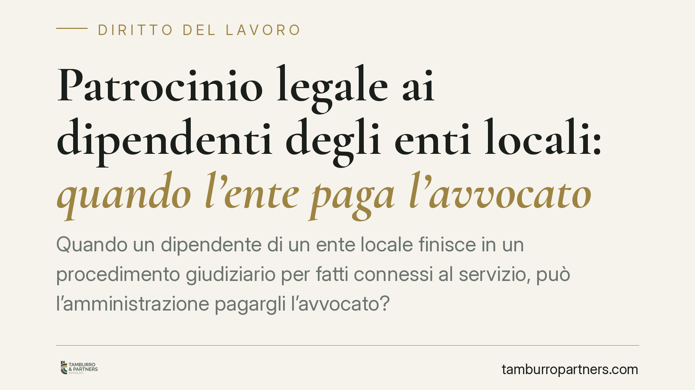

Patrocinio legale ai dipendenti degli enti locali: quando l'ente paga l'avvocato
Quando un dipendente di un ente locale finisce in un procedimento giudiziario per fatti connessi al servizio, può l'amministrazione pagargli l'avvocato? La risposta dipende da regole consolidate, non da automatismi. Il presupposto decisivo è l'assenza di conflitto di interessi con l'ente, anche solo potenziale. Chiariamo il quadro vigente e i punti su cui si gioca la decisione.

Il quadro normativo di riferimento
La materia del patrocinio legale ai dipendenti degli enti locali non nasce da una singola disposizione recente, ma da un impianto consolidato. Il riferimento contrattuale storico è l'art. 28 del CCNL del comparto Regioni e Autonomie locali del 14 settembre 2000, che disciplina l'assunzione da parte dell'ente degli oneri di difesa del dipendente coinvolto in procedimenti connessi all'espletamento del servizio e all'adempimento dei compiti d'ufficio.
Il fondamento giuridico va cercato nel principio di immedesimazione organica: quando il dipendente agisce nell'esercizio delle sue funzioni, la sua attività è imputata all'ente. Da qui l'interesse dell'amministrazione a tutelare chi è chiamato a rispondere per atti compiuti per conto dell'ufficio. Attenzione, invece, a non confondere questo con l'art. 2049 c.c., che riguarda tutt'altro: la responsabilità del datore verso i terzi per i fatti illeciti dei propri dipendenti, non la difesa del dipendente stesso.
Il tema è stato precisato nel tempo dalla giurisprudenza contabile. La Corte dei conti ha più volte ribadito che l'assunzione degli oneri difensivi presuppone un nesso stretto tra il procedimento e i compiti d'ufficio, oltre all'assenza di conflitto di interessi tra dipendente ed ente.
Anticipo o rimborso: una distinzione che pesa
È qui che occorre sgombrare il campo da un equivoco diffuso. L'idea che l'ente anticipi automaticamente e subito le spese legali non corrisponde al regime effettivo. La regola prevalente è quella del rimborso, spesso condizionato all'esito del giudizio: l'ente interviene in modo pieno quando il procedimento si chiude senza responsabilità a carico del dipendente per fatti commessi nell'esercizio delle funzioni.
L'anticipazione immediata, dove ammessa, resta un'ipotesi più circoscritta e prudente, proprio perché l'amministrazione deve evitare di finanziare la difesa di chi potrebbe poi risultare in conflitto con l'ente o responsabile verso lo stesso.
Il nodo del conflitto di interessi
Il punto più delicato è la nozione di conflitto. Non rileva solo il conflitto attuale e conclamato — ad esempio quando il procedimento riguarda un danno subito proprio dall'ente — ma anche quello potenziale: una situazione in cui, pur senza contrapposizione già manifesta, esiste il rischio che gli interessi del dipendente divergano da quelli dell'amministrazione.
La differenza è pratica. Un conflitto potenziale può emergere, per esempio, quando il procedimento nasce da un'indagine che coinvolge l'operato complessivo dell'ufficio, e non è ancora chiaro se l'ente dovrà costituirsi contro il proprio dipendente. In questi casi la prudenza impone di non assumere subito gli oneri, ma di attendere una verifica più solida.
La doppia esposizione dell'ufficio personale
Per l'ente la decisione non è neutra. L'ufficio del personale si muove tra due rischi contrapposti.
Da un lato, un diniego ingiustificato può generare contenzioso con il dipendente, che potrebbe rivendicare il rimborso in sede giudiziaria se il procedimento si chiude a suo favore e il nesso con il servizio era chiaro.
Dall'altro, un pagamento concesso con leggerezza — in presenza di conflitto o fuori dai presupposti — espone chi ha deliberato a responsabilità erariale, cioè all'obbligo di rispondere davanti alla Corte dei conti del danno arrecato alle casse pubbliche. La valutazione va quindi documentata con cura.
Cosa fare in concreto
- Verificare il nesso con il servizio: accertare per iscritto che il procedimento riguardi fatti connessi all'esercizio delle funzioni e all'adempimento dei compiti d'ufficio.
- Mappare il conflitto di interessi: esaminare se l'ente sia, o possa diventare, controparte del dipendente; in caso di conflitto anche solo potenziale, sospendere la decisione sull'anticipo.
- Distinguere anticipo e rimborso: chiarire fin dall'inizio il titolo dell'intervento economico e le condizioni, incluso l'eventuale vincolo all'esito del giudizio.
- Motivare e documentare la delibera: riportare presupposti, verifiche svolte e base normativa, a tutela sia del dipendente sia di chi decide.
- Conservare la corrispondenza difensiva: tenere traccia di preventivi, incarichi e sviluppi del procedimento, utili in sede di liquidazione o di eventuale contenzioso.
Data la varietà delle situazioni concrete, è opportuno affrontare la questione caso per caso, con un'analisi preventiva del presupposto del conflitto prima di qualsiasi impegno di spesa.
Disclaimer
Contributo informativo a cura di Tamburro & Partners - Avv. Giuseppe Tamburro. Non costituisce parere legale.
Ogni storia di lavoro ha i suoi tempi.
Se gestisci HR e vuoi un confronto su contenzioso, ispezioni o licenziamenti, scrivi allo studio. Ti rispondiamo entro un giorno lavorativo.